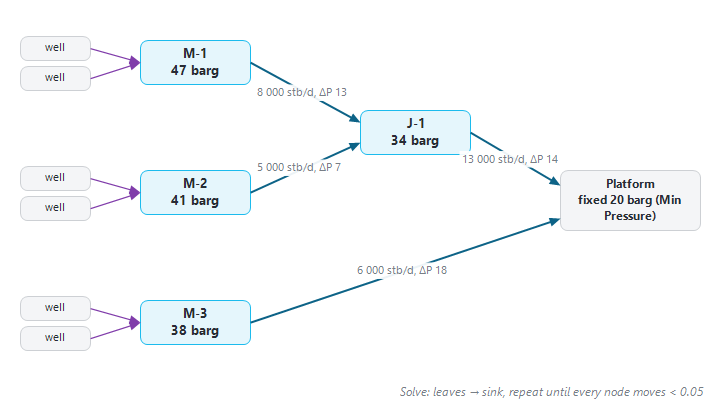
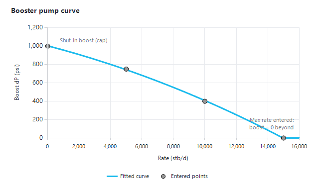

|
Pipelines, pumps and network pressure solve
1. Overview — when the network pressures are solved
In a Decline-curves (DCA) forecast, the network carries rates and constraints only. When the scenario's "Decline" setting is "Material Balance" or "Simulation", Precept also computes the pressure at every manifold and junction from the hydraulics of the pipes:
•the pressure at the outlet of the network (the separator or platform) is fixed by you;
•each pipe leg has a lift curve (a pipeline VLP) that gives the pressure needed at its inlet to push a given flow to its outlet;
•each well then flows against the solved pressure of its manifold, so more flow in a shared line means a higher back-pressure on every well of that line.
Only the wells of reservoirs forecast with Material Balance take part in the pressure solve. On a Material Balance run with several reservoirs, Precept first asks, in the "Forecast method per reservoir" window, which reservoirs use Material Balance; the others use Decline curves. See Material Balance and Simulation coupling.
2. How the network is read
The legs that take part in the solve are the rows of "Pipelines VLP" in the Network window (drop-down list above the left table): "Upstream Node", "Downstream Node", "VLP Index" and "Type" (Pipeline or Pump). Pipes are read in the flow direction:
•Production leg — the wells tie in at the upstream node (the manifold). The fixed pressure is the "Min Pressure / Separator pressure / Min FBHP (OP)" of the node at the end of the chain, entered in "View Initial Constraints".
•Injection leg (water or gas injection) — the fixed pressure is at the upstream node, the source (its Min Pressure, or its Max Pressure when no minimum is set). The injectors tie in at the downstream node, the injection manifold.
Multi-level (tree) networks: when the downstream node of one leg is the upstream node of another leg, that node is a junction. Several manifolds can feed a junction, junctions can feed other junctions, and only the final node has a fixed pressure. All the node pressures are solved together:
1.Every node starts at the fixed pressure of its chain.
2.From the far ends towards the sink, each node's outflow is computed: its own wells, evaluated at the node pressure, plus everything arriving from upstream nodes.
3.The node pressure is moved towards the pressure its downstream leg's VLP needs to carry that outflow to the next node.
4.The sweep is repeated until no node pressure changes by more than 0.05 (in the asset's pressure unit).

Figure 1 — A two-level network. Only the platform pressure is fixed; the junction and manifold pressures are solved, each one higher than the node downstream of it by the pressure drop of its leg at the flow it carries.
Then, at each time step:
•The optimiser applies the rate constraints, which may choke wells back. Precept then solves the network again with the constrained flows, recomputes the well potentials at the new pressures and re-optimises, until the manifold pressures change by less than 0.5 between passes (at most 15 passes).
•A chain that never reaches a node with a fixed pressure (for example the platform Min Pressure was left empty) is not solved: its wells fall back to their own limits (THP, drawdown).
•If the solve cannot settle, the forecast stops with "Network pressure solve failed on <date>" and names the worst node. A common cause is a well that flows at one pressure and dies just above it: check its reservoir pressure against its VLP, or shut it for that period.
3. Pipeline VLPs (flowlines and risers)
A pipe leg is modelled like a well without a reservoir: a geometry, a fluid, and a lift-curve table generated by Precept's own pressure traverse. Before you start, set the scenario's VLP folder in the Material Balance window: pipeline VLP files are saved there.
1.In the Network window, right-click the pipe on the diagram. The pipeline window opens, titled "Pipeline from <upstream> to <downstream>", with the tabs "Completion", "PVT" and "VLP".
2."Completion" tab, "Pipe segments" grid: one row per node of the pipe, with MD, TVDSS, "Pipe ID", "Roughness" and "Surrounding temperature". As for a well, MD 0 is the outlet (the downstream end, e.g. the top of the riser) and the largest MD is the inlet (the upstream manifold). The row at MD 0 needs no Pipe ID or Roughness: each segment's values sit on its lower node. The "Pipeline profile" chart draws the pipe. Click "Save".
3."PVT" tab: the fluid carried by the pipe. It is stored in the pipe's VLP file.
4."VLP" tab: set "Table Index" (unique in the VLP folder), the "Correlation" (Beggs & Brill, Hagedorn-Brown or Gray), "F1 (tuning)", "F2 (tuning)" and the "U-value" (section 5). Check the values of each axis: liquid rate, THP (the outlet pressure), BSW, GOR and inlet temperature.
5.Click "Generate VLP file". The file is saved in the scenario's VLP folder as <name>_<index>.vlp and the leg is registered in "Pipelines VLP" ("Pipeline VLP <index> registered"). Generating again replaces the leg's previous curve.
3.1 Matching measured pressure drops
Under the buttons of the VLP tab, "Pressure drop matching" tunes F1 and F2 on measured points:
1.Enter one row per measured point: "Upstream Pressure", "Downstream Pressure" (the outlet), "Liquid", "BSW" and "GOR".
2.Choose what to tune: "Auto" (with one point, F1 for a riser where gravity dominates, F2 for a flat line where friction dominates; with two or more points, both), "F1 (gravity)", "F2 (friction)" or "F1 and F2".
3.Click "Match F1 / F2". The tuned values, the "Calc. upstream" pressure and the "Error" of each point, and the RMS error are shown.
4.Click "Generate VLP file" to apply the tuning. The points are saved in the VLP file. Right-click the grid to delete points or clear them all.
4. Booster pumps
A booster pump adds pressure to the flow. Its boost falls as the rate rises, following its pump curve. Precept treats a pump as a node whose "lift curve" is a pressure gain instead of a loss.
1.Draw the Pump icon between the manifold and the next node: a pipe from the manifold to the pump, and a pipe from the pump to the next node (for example the platform).
2.Right-click the pump. The "<pump> - Performance curve" window opens. "Inlet (from)" is pre-filled with the node feeding the pump and "Outlet (to)" with the pump node itself; keep them unless your layout differs.
3.Enter a "VLP index" not used by any other VLP file in the folder, and at least 3 points of the curve in the grid: "Rate" and "Boost dP", in the asset's liquid-rate and pressure units. A quadratic curve is fitted and drawn on the right.
4.Click "Save". The pump is saved as a VLP file in the scenario's VLP folder and registered in "Pipelines VLP" with the Type "Pump". Right-clicking the pump again shows the saved curve.
5.Give the pipe leaving the pump its own pipeline VLP (section 3). If an older leg still goes straight from the manifold to the platform, remove it from "Pipelines VLP" (right-click, "Remove selected VLP").

Figure 2 — A pump curve: the entered points and the fitted quadratic. The boost is never negative, never above the shut-in boost, and zero beyond the largest rate entered.
4.1 How the pump is used in the network solve
In the network solve, the pump is its own leg, like a pipe. At each step Precept takes the flow through the pump and reads the boost from the pump curve. The pressure on the pump's inlet (suction) side is then the pressure at its outlet minus that boost, never below zero. The pipes before and after the pump keep their own lift curves, with heat transfer, so the pump can sit anywhere in a chain: Manifold → Pump → Platform, or Manifold → Pump → Riser → Platform. On an injection line the boost is added instead: the injection manifold pressure is the source pressure plus the boost.
•The pump's rate is the liquid rate (oil + water) on a production line, and the injected rate on an injection line. Enter the pump curve in those units.
•The pump's own .vfp file in the VLP folder only reserves its index and carries the curve. Precept reads the curve from it and applies the boost exactly; the table inside the file is not interpolated.
5. Heat transfer and node temperatures
Pipeline VLPs include heat transfer with the surroundings (seabed, sea water, ground):
•"Surrounding temperature" (Completion tab) — the temperature around the pipe at each node, in the asset's temperature unit. Enter it on one node for a uniform temperature, or on several nodes for a profile (linear in between).
•"U-value" (VLP tab) — the overall heat-transfer coefficient, in BTU/hr/ft²/°F, referred to the pipe inside diameter. Default 8 (a bare pipe in sea water).
•"Inlet temperature" axis (VLP tab) — the VLP table is generated for several fluid temperatures at the pipe inlet, so the network solve can read the pressure drop at the actual inlet temperature.
During the network solve:
•Each well's stream enters the network at its reservoir temperature.
•At each node, the arriving streams are mixed in proportion to their heat capacity (oil 0.53, gas 0.51, water 1.0 BTU/lb/°F).
•Along a pipe, the fluid cools towards the surrounding temperature: T_out = T_surr + (T_in − T_surr) × exp(−U·π·D·L / W), where D is the pipe inside diameter, L the length and W the heat-capacity rate of the flow. A small flow arrives close to the surrounding temperature, a large flow arrives warm. There is no Joule-Thomson effect.
•The arrival temperature becomes the inlet temperature of the next leg. A pipe with no flow passes on no temperature.
6. Where to see the results
•Results window: select a node; for a Material Balance or Simulation scenario the parameters "Pressure" (the solved node pressure, gauge) and "Temperature" (the mixed node temperature) can be charted. See Forecast results: Charts.
•Network view: click a node and pick "Pressure" in its chart (see Network view (forecast)).
7. Quick start
1.Set the scenario's "Decline" setting to "Material Balance" (or "Simulation") and its VLP folder in the Material Balance window.
2.In the Network window, enter the outlet pressure ("Min Pressure / Separator pressure / Min FBHP (OP)") of the platform or separator.
3.Right-click each pipe leg, enter its geometry and surrounding temperatures, and click "Generate VLP file". Match F1 / F2 if you have measured pressure drops.
4.Right-click each booster pump and enter its curve.
5.Check "Pipelines VLP": one row per leg, no stale rows. Save the network.
6.Run the forecast and chart the node "Pressure" and "Temperature" in the Results window.
|